library(openxlsx)
library(MASS) # funciones adicionales para modelos lineales
library(corrplot) # correlaciones gráficas
library(lmtest) # pruebas como Durbin-Watson, Breusch-Pagan
library(ggplot2) # gráficos avanzadosCapitulo_4_Uso_de_la_Regresion_Multiple
1 1. Material descargable
2 Configuración inicial en R
2.1 Carga de librerías
2.2 Definir ruta de trabajo
En tu proyecto utilizaremos la ruta:
ruta_datos <- "C:/Users/manue/Desktop/lab-econometria/labs_epg/data_epg"
# Verificamos que la carpeta exista y revisamos algunos archivos
list.files(ruta_datos) [1] "annos_mantenimiento.xlsx" "auto_peso_consumo.xlsx"
[3] "costos.xlsx" "data_PCA_Decathlon.csv"
[5] "data_PCA_ExpertWine.csv" "Ejemplo1.xlsx"
[7] "Ejemplo2.xlsx" "millaje.txt"
[9] "orange.csv" "tabla_ejemplo_R.xlsx"
Tip
Si copias este laboratorio a otro computador, solo deberás cambiar la ruta de ruta_datos para que apunte a la nueva carpeta donde estén millaje.txt y otros archivos de datos.
3 Parte 1: Regresión múltiple con inversión publicitaria (tv, radio, periodico)
En esta primera parte trabajaremos con un ejemplo clásico de marketing:
- tv: gasto en publicidad en TV (en miles de dólares).
- radio: gasto en publicidad en radio.
- periodico: gasto en publicidad en periódicos.
- ventas: ventas del producto (en miles de unidades).
La idea es entender cómo se relacionan las ventas con los distintos medios publicitarios, usando regresión múltiple.
3.1 Crear el conjunto de datos
El script genera los vectores directamente en R y luego los combina en un data.frame:
tv <- c(230.1, 44.5, 17.2, 151.5, 180.8, 8.7, 57.5, 120.2, 8.6, 199.8, 66.1, 214.7,
23.8, 97.5, 204.1, 195.4, 67.8, 281.4, 69.2, 147.3, 218.4, 237.4, 13.2,
228.3, 62.3, 262.9, 142.9, 240.1, 248.8, 70.6, 292.9, 112.9, 97.2, 265.6,
95.7, 290.7, 266.9, 74.7, 43.1, 228.0, 202.5, 177.0, 293.6, 206.9, 25.1,
175.1, 89.7, 239.9, 227.2, 66.9, 199.8, 100.4, 216.4, 182.6, 262.7, 198.9,
7.3, 136.2, 210.8, 210.7, 53.5, 261.3, 239.3, 102.7, 131.1, 69.0, 31.5,
139.3, 237.4, 216.8, 199.1, 109.8, 26.8, 129.4, 213.4, 16.9, 27.5, 120.5,
5.4, 116.0, 76.4, 239.8, 75.3, 68.4, 213.5, 193.2, 76.3, 110.7, 88.3,
109.8, 134.3, 28.6, 217.7, 250.9, 107.4, 163.3, 197.6, 184.9, 289.7,
135.2, 222.4, 296.4, 280.2, 187.9, 238.2, 137.9, 25.0, 90.4, 13.1, 255.4,
225.8, 241.7, 175.7, 209.6, 78.2, 75.1, 139.2, 76.4, 125.7, 19.4, 141.3,
18.8, 224.0, 123.1, 229.5, 87.2, 7.8, 80.2, 220.3, 59.6, 0.7, 265.2,
8.4, 219.8, 36.9, 48.3, 25.6, 273.7, 43.0, 184.9, 73.4, 193.7, 220.5,
104.6, 96.2, 140.3, 240.1, 243.2, 38.0, 44.7, 280.7, 121.0, 197.6, 171.3,
187.8, 4.1, 93.9, 149.8, 11.7, 131.7, 172.5, 85.7, 188.4, 163.5, 117.2,
234.5, 17.9, 206.8, 215.4, 284.3, 50.0, 164.5, 19.6, 168.4, 222.4, 276.9,
248.4, 170.2, 276.7, 165.6, 156.6, 218.5, 56.2, 287.6, 253.8, 205.0,
139.5, 191.1, 286.0, 18.7, 39.5, 75.5, 17.2, 166.8, 149.7, 38.2, 94.2,
177.0, 283.6, 232.1)
radio <- c(37.8, 39.3, 45.9, 41.3, 10.8, 48.9, 32.8, 19.6, 2.1, 2.6, 5.8, 24.0,
35.1, 7.6, 32.9, 47.7, 36.6, 39.6, 20.5, 23.9, 27.7, 5.1, 15.9, 16.9,
12.6, 3.5, 29.3, 16.7, 27.1, 16.0, 28.3, 17.4, 1.5, 20.0, 1.4, 4.1,
43.8, 49.4, 26.7, 37.7, 22.3, 33.4, 27.7, 8.4, 25.7, 22.5, 9.9, 41.5,
15.8, 11.7, 3.1, 9.6, 41.7, 46.2, 28.8, 49.4, 28.1, 19.2, 49.6, 29.5,
2.0, 42.7, 15.5, 29.6, 42.8, 9.3, 24.6, 14.5, 27.5, 43.9, 30.6, 14.3,
33.0, 5.7, 24.6, 43.7, 1.6, 28.5, 29.9, 7.7, 26.7, 4.1, 20.3, 44.5,
43.0, 18.4, 27.5, 40.6, 25.5, 47.8, 4.9, 1.5, 33.5, 36.5, 14.0, 31.6,
3.5, 21.0, 42.3, 41.7, 4.3, 36.3, 10.1, 17.2, 34.3, 46.4, 11.0, 0.3,
0.4, 26.9, 8.2, 38.0, 15.4, 20.6, 46.8, 35.0, 14.3, 0.8, 36.9, 16.0,
26.8, 21.7, 2.4, 34.6, 32.3, 11.8, 38.9, 0.0, 49.0, 12.0, 39.6, 2.9,
27.2, 33.5, 38.6, 47.0, 39.0, 28.9, 25.9, 43.9, 17.0, 35.4, 33.2, 5.7,
14.8, 1.9, 7.3, 49.0, 40.3, 25.8, 13.9, 8.4, 23.3, 39.7, 21.1, 11.6,
43.5, 1.3, 36.9, 18.4, 18.1, 35.8, 18.1, 36.8, 14.7, 3.4, 37.6, 5.2,
23.6, 10.6, 11.6, 20.9, 20.1, 7.1, 3.4, 48.9, 30.2, 7.8, 2.3, 10.0,
2.6, 5.4, 5.7, 43.0, 21.3, 45.1, 2.1, 28.7, 13.9, 12.1, 41.1, 10.8,
4.1, 42.0, 35.6, 3.7, 4.9, 9.3, 42.0, 8.6)
periodico <- c(69.2, 45.1, 69.3, 58.5, 58.4, 75.0, 23.5, 11.6, 1.0, 21.2, 24.2,
4.0, 65.9, 7.2, 46.0, 52.9, 114.0, 55.8, 18.3, 19.1, 53.4, 23.5,
49.6, 26.2, 18.3, 19.5, 12.6, 22.9, 22.9, 40.8, 43.2, 38.6, 30.0,
0.3, 7.4, 8.5, 5.0, 45.7, 35.1, 32.0, 31.6, 38.7, 1.8, 26.4, 43.3,
31.5, 35.7, 18.5, 49.9, 36.8, 34.6, 3.6, 39.6, 58.7, 15.9, 60.0,
41.4, 16.6, 37.7, 9.3, 21.4, 54.7, 27.3, 8.4, 28.9, 0.9, 2.2, 10.2,
11.0, 27.2, 38.7, 31.7, 19.3, 31.3, 13.1, 89.4, 20.7, 14.2, 9.4,
23.1, 22.3, 36.9, 32.5, 35.6, 33.8, 65.7, 16.0, 63.2, 73.4, 51.4,
9.3, 33.0, 59.0, 72.3, 10.9, 52.9, 5.9, 22.0, 51.2, 45.9, 49.8,
100.9, 21.4, 17.9, 5.3, 59.0, 29.7, 23.2, 25.6, 5.5, 56.5, 23.2,
2.4, 10.7, 34.5, 52.7, 25.6, 14.8, 79.2, 22.3, 46.2, 50.4, 15.6,
12.4, 74.2, 25.9, 50.6, 9.2, 3.2, 43.1, 8.7, 43.0, 2.1, 45.1, 65.6,
8.5, 9.3, 59.7, 20.5, 1.7, 12.9, 75.6, 37.9, 34.4, 38.9, 9.0, 8.7,
44.3, 11.9, 20.6, 37.0, 48.7, 14.2, 37.7, 9.5, 5.7, 50.5, 24.3,
45.2, 34.6, 30.7, 49.3, 25.6, 7.4, 5.4, 84.8, 21.6, 19.4, 57.6,
6.4, 18.4, 47.4, 17.0, 12.8, 13.1, 41.8, 20.3, 35.2, 23.7, 17.6,
8.3, 27.4, 29.7, 71.8, 30.0, 19.6, 26.6, 18.2, 3.7, 23.4, 5.8, 6.0,
31.6, 3.6, 6.0, 13.8, 8.1, 6.4, 66.2, 8.7)
ventas <- c(22.1, 10.4, 9.3, 18.5, 12.9, 7.2, 11.8, 13.2, 4.8, 10.6, 8.6, 17.4,
9.2, 9.7, 19.0, 22.4, 12.5, 24.4, 11.3, 14.6, 18.0, 12.5, 5.6, 15.5,
9.7, 12.0, 15.0, 15.9, 18.9, 10.5, 21.4, 11.9, 9.6, 17.4, 9.5, 12.8,
25.4, 14.7, 10.1, 21.5, 16.6, 17.1, 20.7, 12.9, 8.5, 14.9, 10.6, 23.2,
14.8, 9.7, 11.4, 10.7, 22.6, 21.2, 20.2, 23.7, 5.5, 13.2, 23.8, 18.4,
8.1, 24.2, 15.7, 14.0, 18.0, 9.3, 9.5, 13.4, 18.9, 22.3, 18.3, 12.4,
8.8, 11.0, 17.0, 8.7, 6.9, 14.2, 5.3, 11.0, 11.8, 12.3, 11.3, 13.6,
21.7, 15.2, 12.0, 16.0, 12.9, 16.7, 11.2, 7.3, 19.4, 22.2, 11.5, 16.9,
11.7, 15.5, 25.4, 17.2, 11.7, 23.8, 14.8, 14.7, 20.7, 19.2, 7.2, 8.7,
5.3, 19.8, 13.4, 21.8, 14.1, 15.9, 14.6, 12.6, 12.2, 9.4, 15.9, 6.6,
15.5, 7.0, 11.6, 15.2, 19.7, 10.6, 6.6, 8.8, 24.7, 9.7, 1.6, 12.7,
5.7, 19.6, 10.8, 11.6, 9.5, 20.8, 9.6, 20.7, 10.9, 19.2, 20.1, 10.4,
11.4, 10.3, 13.2, 25.4, 10.9, 10.1, 16.1, 11.6, 16.6, 19.0, 15.6,
3.2, 15.3, 10.1, 7.3, 12.9, 14.4, 13.3, 14.9, 18.0, 11.9, 11.9, 8.0,
12.2, 17.1, 15.0, 8.4, 14.5, 7.6, 11.7, 11.5, 27.0, 20.2, 11.7, 11.8,
12.6, 10.5, 12.2, 8.7, 26.2, 17.6, 22.6, 10.3, 17.3, 15.9, 6.7, 10.8,
9.9, 5.9, 19.6, 17.3, 7.6, 9.7, 12.8, 25.5, 13.4)
datos <- data.frame(tv, radio, periodico, ventas)
head(datos) tv radio periodico ventas
1 230.1 37.8 69.2 22.1
2 44.5 39.3 45.1 10.4
3 17.2 45.9 69.3 9.3
4 151.5 41.3 58.5 18.5
5 180.8 10.8 58.4 12.9
6 8.7 48.9 75.0 7.23.2 Correlaciones y multicolinealidad
Primero, miramos las correlaciones entre variables:
pairs(datos)
r <- cor(datos)
r tv radio periodico ventas
tv 1.00000000 0.05480866 0.05664787 0.7822244
radio 0.05480866 1.00000000 0.35410375 0.5762226
periodico 0.05664787 0.35410375 1.00000000 0.2282990
ventas 0.78222442 0.57622257 0.22829903 1.0000000corrplot(r, method="circle", type="lower", diag=FALSE,
tl.col="black", tl.cex=0.8, tl.srt=45)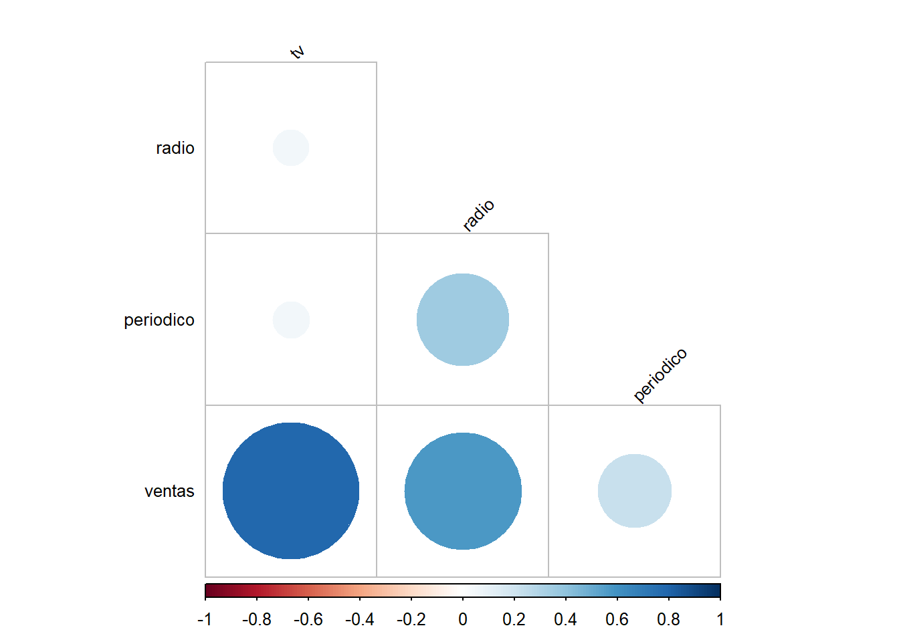
Nota
Interpretación:
- La columna ventas te muestra cómo se relaciona la variable respuesta con cada medio.
- Si dos regresores (por ejemplo,
tvyradio) tienen correlación muy alta, podría haber multicolinealidad.
- El
corrplotayuda a ver estas relaciones de forma más clara que solo con la matriz numérica.
3.3 Modelo con las tres variables
Ajustamos el modelo completo:
\[ \text{ventas} = \beta_0 + \beta_1 \text{tv} + \beta_2 \text{radio} + \beta_3 \text{periodico} + \varepsilon \]
modelo_full <- lm(ventas ~ tv + radio + periodico, data = datos)
summary(modelo_full)
Call:
lm(formula = ventas ~ tv + radio + periodico, data = datos)
Residuals:
Min 1Q Median 3Q Max
-8.8277 -0.8908 0.2418 1.1893 2.8292
Coefficients:
Estimate Std. Error t value Pr(>|t|)
(Intercept) 2.938889 0.311908 9.422 <2e-16 ***
tv 0.045765 0.001395 32.809 <2e-16 ***
radio 0.188530 0.008611 21.893 <2e-16 ***
periodico -0.001037 0.005871 -0.177 0.86
---
Signif. codes: 0 '***' 0.001 '**' 0.01 '*' 0.05 '.' 0.1 ' ' 1
Residual standard error: 1.686 on 196 degrees of freedom
Multiple R-squared: 0.8972, Adjusted R-squared: 0.8956
F-statistic: 570.3 on 3 and 196 DF, p-value: < 2.2e-16
Nota
Mira especialmente:
- El p-value de cada coeficiente → te indica si esa variable es significativa.
- El p-value de la prueba F → si el modelo completo explica significativamente a
ventas.
- El R^2 y R^2 ajustado → qué porcentaje de la variación se explica por los regresores.
3.4 Modelo sin variable no significativa
Si el coeficiente de periodico no es significativo, podemos intentar un modelo más parsimonioso:
modelo <- lm(ventas ~ tv + radio, data = datos)
summary(modelo)
Call:
lm(formula = ventas ~ tv + radio, data = datos)
Residuals:
Min 1Q Median 3Q Max
-8.7977 -0.8752 0.2422 1.1708 2.8328
Coefficients:
Estimate Std. Error t value Pr(>|t|)
(Intercept) 2.92110 0.29449 9.919 <2e-16 ***
tv 0.04575 0.00139 32.909 <2e-16 ***
radio 0.18799 0.00804 23.382 <2e-16 ***
---
Signif. codes: 0 '***' 0.001 '**' 0.01 '*' 0.05 '.' 0.1 ' ' 1
Residual standard error: 1.681 on 197 degrees of freedom
Multiple R-squared: 0.8972, Adjusted R-squared: 0.8962
F-statistic: 859.6 on 2 and 197 DF, p-value: < 2.2e-16
Tip
Eliminar variables no significativas:
- Simplifica la interpretación.
- Puede mejorar la capacidad predictiva fuera de muestra.
- Siempre es recomendable comparar modelos (por ejemplo, con ANOVA o criterios de información).
3.5 Superficie de regresión en 3D
Como ahora el modelo solo depende de tv y radio, podemos visualizar la “superficie de regresión” y cómo se ubican los datos alrededor de ella.
rango_tv <- range(datos$tv)
nuevos_valores_tv <- seq(from = rango_tv[1], to = rango_tv[2], length.out = 20)
rango_radio <- range(datos$radio)
nuevos_valores_radio <- seq(from = rango_radio[1], to = rango_radio[2],
length.out = 20)
predicciones <- outer(
X = nuevos_valores_tv,
Y = nuevos_valores_radio,
FUN = function(tv, radio) {
predict(object = modelo, newdata = data.frame(tv, radio))
}
)
superficie <- persp(
x = nuevos_valores_tv,
y = nuevos_valores_radio,
z = predicciones,
theta = 18, phi = 20,
col = "lightblue", shade = 0.1,
xlab = "tv", ylab = "radio", zlab = "ventas",
ticktype = "detailed",
main = "Predicción ventas ~ tv + radio"
)
observaciones <- trans3d(datos$tv, datos$radio, datos$ventas, superficie)
error <- trans3d(datos$tv, datos$radio, fitted(modelo), superficie)
points(observaciones, col = "red", pch = 16)
segments(observaciones$x, observaciones$y, error$x, error$y)
Nota
- Los puntos rojos son las observaciones reales.
- Las líneas verticales muestran la distancia entre la superficie de predicción y los datos → son los errores del modelo.
- Si las líneas son pequeñas, el ajuste es bueno.
3.6 Análisis de residuos del modelo reducido
shapiro.test(modelo$residuals)
Shapiro-Wilk normality test
data: modelo$residuals
W = 0.91804, p-value = 4.19e-09hist(modelo$residuals, main="Histograma de residuos", xlab="Residuo")
plot(density(modelo$residuals), main="Densidad de residuos", xlab="Residuo")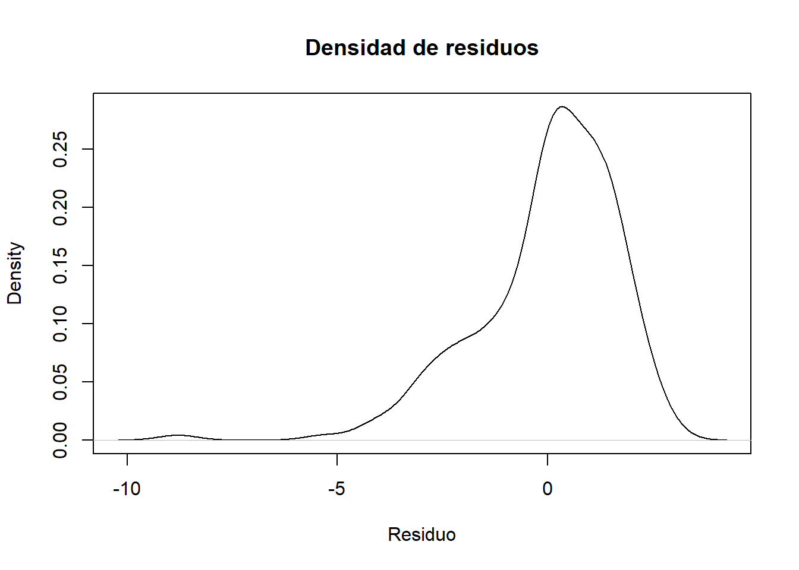
Pruebas de autocorrelación y heterocedasticidad:
dwtest(modelo, alternative ="two.sided", iterations = 1000)
Durbin-Watson test
data: modelo
DW = 2.0808, p-value = 0.5656
alternative hypothesis: true autocorrelation is not 0bptest(modelo)
studentized Breusch-Pagan test
data: modelo
BP = 4.8093, df = 2, p-value = 0.0903Gráfico de valores reales vs estimados:
plot(modelo$fitted.values, datos$ventas,
xlab = "Ventas estimadas", ylab = "Ventas reales",
main = "Ventas reales vs estimadas (modelo sin periodico)")
lines(c(0, 25), c(0, 25), col = "red", lwd = 2)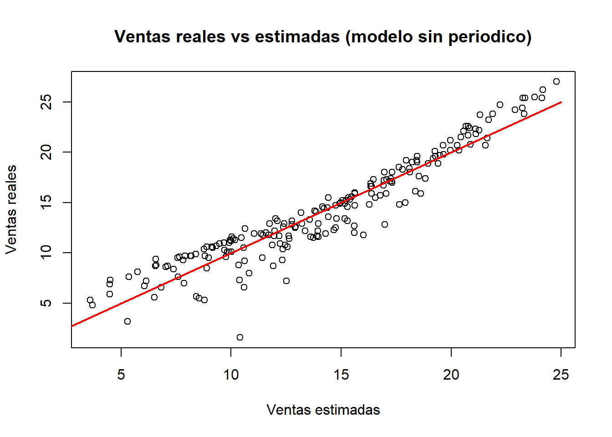
Nota
- Si los puntos se alinean alrededor de la diagonal roja → el modelo predice razonablemente bien.
- Desviaciones sistemáticas o patrones curvos indicarían que falta estructura (no linealidad, interacciones, etc.).
3.7 Incorporar una interacción tv * radio
Ahora probamos un modelo donde el efecto de la TV depende del nivel de radio (y viceversa).
tv_radio <- tv * radio
modelo_interaccion <- lm(ventas ~ tv + radio + tv:radio, data = datos)
summary(modelo_interaccion)
Call:
lm(formula = ventas ~ tv + radio + tv:radio, data = datos)
Residuals:
Min 1Q Median 3Q Max
-6.3366 -0.4028 0.1831 0.5948 1.5246
Coefficients:
Estimate Std. Error t value Pr(>|t|)
(Intercept) 6.750e+00 2.479e-01 27.233 <2e-16 ***
tv 1.910e-02 1.504e-03 12.699 <2e-16 ***
radio 2.886e-02 8.905e-03 3.241 0.0014 **
tv:radio 1.086e-03 5.242e-05 20.727 <2e-16 ***
---
Signif. codes: 0 '***' 0.001 '**' 0.01 '*' 0.05 '.' 0.1 ' ' 1
Residual standard error: 0.9435 on 196 degrees of freedom
Multiple R-squared: 0.9678, Adjusted R-squared: 0.9673
F-statistic: 1963 on 3 and 196 DF, p-value: < 2.2e-16Analizamos los residuos del nuevo modelo:
shapiro.test(modelo_interaccion$residuals)
Shapiro-Wilk normality test
data: modelo_interaccion$residuals
W = 0.8469, p-value = 3.047e-13hist(modelo_interaccion$residuals, main="Histograma residuos modelo interacción")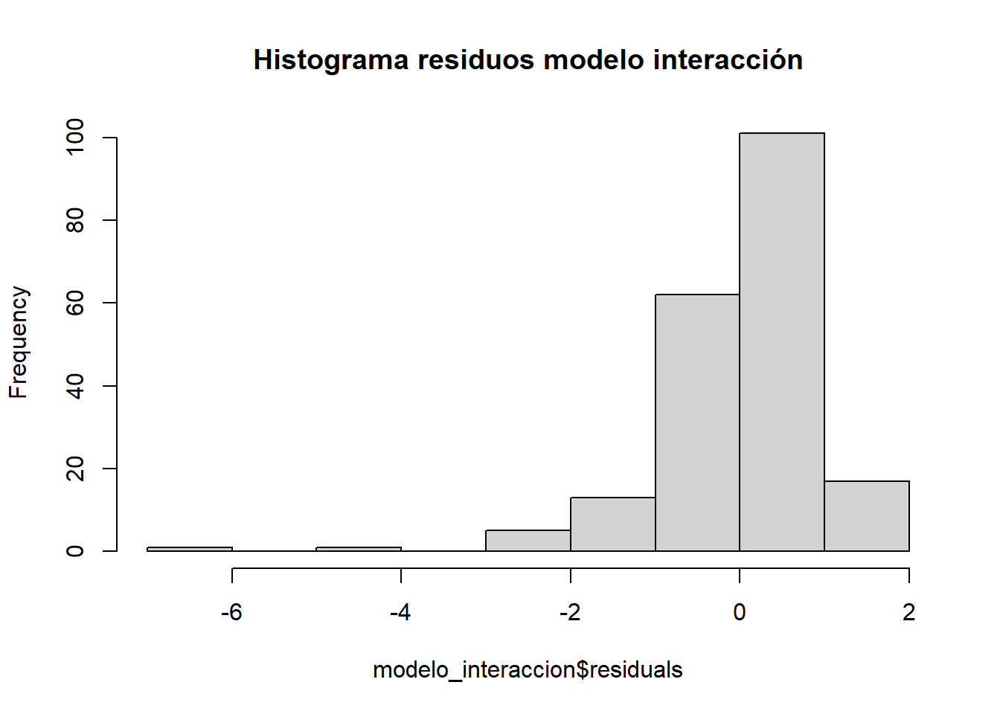
plot(density(modelo_interaccion$residuals),
main="Densidad residuos modelo interacción", xlab="Residuo")
dwtest(modelo_interaccion, alternative ="two.sided", iterations = 1000)
Durbin-Watson test
data: modelo_interaccion
DW = 2.2236, p-value = 0.1103
alternative hypothesis: true autocorrelation is not 0bptest(modelo_interaccion)
studentized Breusch-Pagan test
data: modelo_interaccion
BP = 14.324, df = 3, p-value = 0.002495Ventas reales vs estimadas con interacción:
plot(modelo_interaccion$fitted.values, datos$ventas,
xlab = "Ventas estimadas",
ylab = "Ventas reales",
main = "Ventas reales vs estimadas (modelo con interacción)")
lines(c(0, 25), c(0, 25), col = "red", lwd = 2)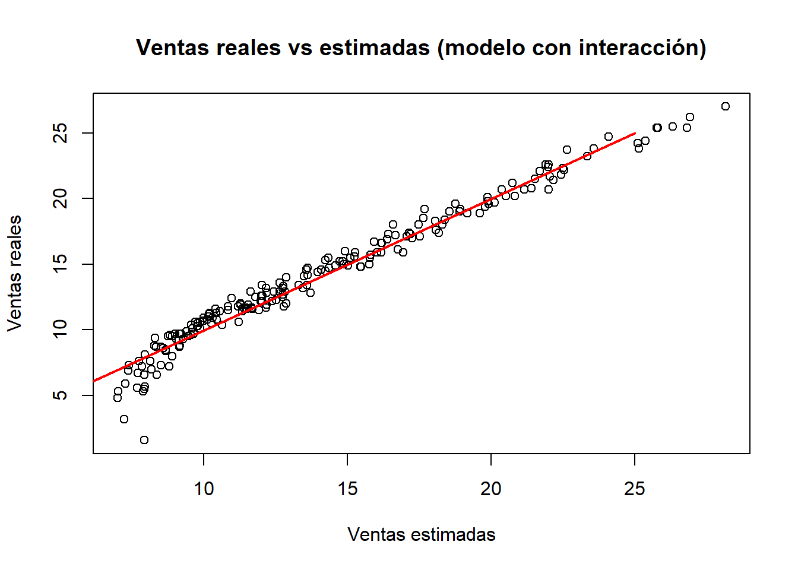
3.8 Superficie del modelo con interacción
rango_tv <- range(datos$tv)
nuevos_valores_tv <- seq(from = rango_tv[1], to = rango_tv[2], length.out = 20)
rango_radio <- range(datos$radio)
nuevos_valores_radio <- seq(from = rango_radio[1], to = rango_radio[2], length.out = 20)
predicciones <- outer(
X = nuevos_valores_tv,
Y = nuevos_valores_radio,
FUN = function(tv, radio) {
predict(object = modelo_interaccion,
newdata = data.frame(tv, radio))
}
)
superficie <- persp(
x = nuevos_valores_tv,
y = nuevos_valores_radio,
z = predicciones,
theta = 18, phi = 20,
col = "lightblue", shade = 0.1,
xlab = "tv", ylab = "radio", zlab = "ventas",
ticktype = "detailed",
main = "Predicción ventas ~ tv + radio + tv:radio"
)
observaciones <- trans3d(datos$tv, datos$radio, datos$ventas, superficie)
error <- trans3d(datos$tv, datos$radio, fitted(modelo_interaccion), superficie)
points(observaciones, col = "red", pch = 16)
segments(observaciones$x, observaciones$y, error$x, error$y)
3.9 Comparación de modelos con ANOVA
Comparamos el modelo sin interacción y el modelo con interacción:
anova(modelo, modelo_interaccion)Analysis of Variance Table
Model 1: ventas ~ tv + radio
Model 2: ventas ~ tv + radio + tv:radio
Res.Df RSS Df Sum of Sq F Pr(>F)
1 197 556.91
2 196 174.48 1 382.43 429.59 < 2.2e-16 ***
---
Signif. codes: 0 '***' 0.001 '**' 0.01 '*' 0.05 '.' 0.1 ' ' 1
Nota
- Si la prueba ANOVA da un p-value pequeño, la interacción aporta información estadísticamente significativa.
- Además de la significancia, es importante revisar residuos y lógica económica del modelo.
3.10 Modelo con interacción y término cuadrático en tv
Probamos un modelo más flexible:
\[ \text{ventas} = \beta_0 + \beta_1 \text{tv} + \beta_2 \text{radio} + \beta_3 \text{tv}^2 + \beta_4 (\text{tv}\cdot\text{radio}) + \varepsilon \]
modelo_interaccion_1 <- lm(ventas ~ tv + radio + I(tv^2) + tv:radio, data = datos)
summary(modelo_interaccion_1)
Call:
lm(formula = ventas ~ tv + radio + I(tv^2) + tv:radio, data = datos)
Residuals:
Min 1Q Median 3Q Max
-4.9949 -0.2969 -0.0066 0.3798 1.1686
Coefficients:
Estimate Std. Error t value Pr(>|t|)
(Intercept) 5.137e+00 1.927e-01 26.663 < 2e-16 ***
tv 5.092e-02 2.232e-03 22.810 < 2e-16 ***
radio 3.516e-02 5.901e-03 5.959 1.17e-08 ***
I(tv^2) -1.097e-04 6.893e-06 -15.920 < 2e-16 ***
tv:radio 1.077e-03 3.466e-05 31.061 < 2e-16 ***
---
Signif. codes: 0 '***' 0.001 '**' 0.01 '*' 0.05 '.' 0.1 ' ' 1
Residual standard error: 0.6238 on 195 degrees of freedom
Multiple R-squared: 0.986, Adjusted R-squared: 0.9857
F-statistic: 3432 on 4 and 195 DF, p-value: < 2.2e-16plot(modelo_interaccion_1$fitted.values, datos$ventas,
xlab = "Ventas estimadas", ylab = "Ventas reales",
main = "Ventas reales vs estimadas (modelo con tv^2 e interacción)")
lines(c(0, 27), c(0, 27), col = "red", lwd = 2)
hist(modelo_interaccion_1$residuals, main="Histograma residuos modelo_interaccion_1")
plot(density(modelo_interaccion_1$residuals),
main="Densidad residuos modelo_interaccion_1")
shapiro.test(modelo_interaccion_1$residuals)
Shapiro-Wilk normality test
data: modelo_interaccion_1$residuals
W = 0.80888, p-value = 6.359e-15dwtest(modelo_interaccion_1, alternative ="two.sided", iterations = 1000)
Durbin-Watson test
data: modelo_interaccion_1
DW = 2.204, p-value = 0.1432
alternative hypothesis: true autocorrelation is not 0bptest(modelo_interaccion_1)
studentized Breusch-Pagan test
data: modelo_interaccion_1
BP = 19.986, df = 4, p-value = 0.00050274 Parte 2: Regresión polinomial y transformaciones (ejemplo de millaje)
En esta parte trabajamos con el archivo millaje.txt, que contiene información de autos:
mpg: millas por galón (consumo).
hp: horsepower (potencia del motor).
vol: alguna medida de volumen/cilindrada del motor.
Queremos modelar el consumo de combustible (mpg) en función de la potencia (hp) y otras características, usando polinomios y transformaciones.
4.1 Cargar los datos de millaje
archivo_millaje <- file.path(ruta_datos, "millaje.txt")
millaje <- read.table(file = archivo_millaje, header = TRUE)
head(millaje) mpg sp wt vol hp
1 65.4 96 17.5 89 49
2 56.0 97 20.0 92 55
3 55.9 97 20.0 92 55
4 49.0 105 20.0 92 70
5 46.5 96 20.0 92 53
6 46.2 105 20.0 89 704.2 Correlaciones y gráficos
r_auto <- cor(millaje)
r_auto mpg sp wt vol hp
mpg 1.0000000 -0.68844623 -0.9050849 -0.36861368 -0.78985635
sp -0.6884462 1.00000000 0.6785339 -0.04306242 0.96654517
wt -0.9050849 0.67853388 1.0000000 0.38495423 0.83222021
vol -0.3686137 -0.04306242 0.3849542 1.00000000 0.07647905
hp -0.7898564 0.96654517 0.8322202 0.07647905 1.00000000pairs(millaje)
corrplot(r_auto, method="circle", type="lower", diag=FALSE,
tl.col="black", tl.cex=0.8, tl.srt=45)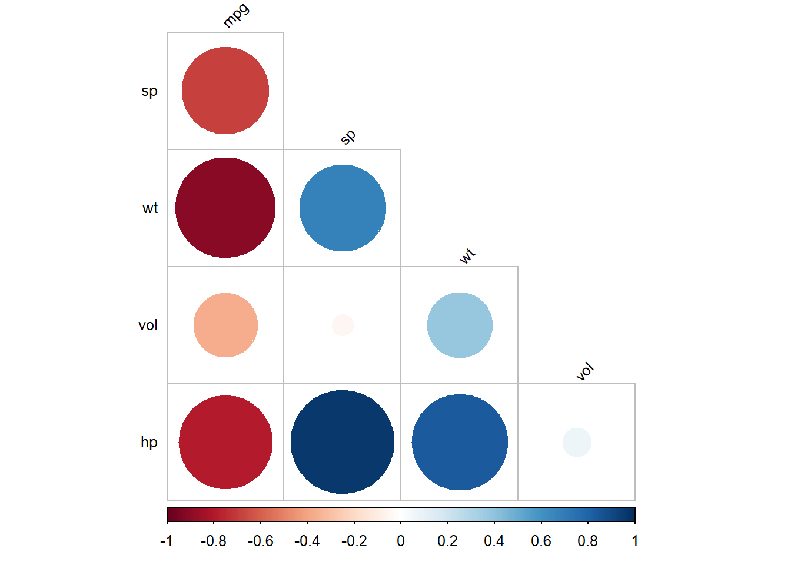
Gráfico simple de mpg vs hp:
plot(
x = millaje$hp,
y = millaje$mpg,
main = "Consumo vs potencia motor",
xlab = "hp (potencia)",
ylab = "mpg (millas por galón)",
pch = 20,
col = "grey"
)
4.3 Modelo lineal simple en hp y vol
modelo_lineal <- lm(mpg ~ hp + vol, data = millaje)
summary(modelo_lineal)
Call:
lm(formula = mpg ~ hp + vol, data = millaje)
Residuals:
Min 1Q Median 3Q Max
-10.556 -3.411 -0.687 2.736 21.058
Coefficients:
Estimate Std. Error t value Pr(>|t|)
(Intercept) 63.40255 2.91066 21.783 < 2e-16 ***
hp -0.13485 0.01052 -12.818 < 2e-16 ***
vol -0.13993 0.02698 -5.187 1.61e-06 ***
---
Signif. codes: 0 '***' 0.001 '**' 0.01 '*' 0.05 '.' 0.1 ' ' 1
Residual standard error: 5.366 on 79 degrees of freedom
Multiple R-squared: 0.7194, Adjusted R-squared: 0.7123
F-statistic: 101.3 on 2 and 79 DF, p-value: < 2.2e-16Visualizamos la recta de regresión en función de hp (manteniendo fijo vol en el promedio, de manera implícita):
plot(
x = millaje$hp,
y = millaje$mpg,
main = "Consumo vs potencia motor (modelo lineal)",
xlab = "hp",
ylab = "mpg",
pch = 20,
col = "grey"
)
abline(modelo_lineal, lwd = 3, col = "red")
Nota
Este gráfico es más ilustrativo que riguroso (porque el modelo usa también vol), pero sirve para visualizar la tendencia lineal negativa: a mayor hp, menor mpg.
4.4 Modelo polinomial cuadrático
Ahora permitimos una relación no lineal entre hp y mpg:
modelo_pol2 <- lm(mpg ~ vol + hp + I(hp^2), data = millaje)
summary(modelo_pol2)
Call:
lm(formula = mpg ~ vol + hp + I(hp^2), data = millaje)
Residuals:
Min 1Q Median 3Q Max
-8.4677 -2.9686 -0.6293 2.3102 15.0791
Coefficients:
Estimate Std. Error t value Pr(>|t|)
(Intercept) 73.3557314 2.8205235 26.008 < 2e-16 ***
vol -0.0546235 0.0255711 -2.136 0.0358 *
hp -0.4115233 0.0436316 -9.432 1.57e-14 ***
I(hp^2) 0.0008294 0.0001283 6.466 8.01e-09 ***
---
Signif. codes: 0 '***' 0.001 '**' 0.01 '*' 0.05 '.' 0.1 ' ' 1
Residual standard error: 4.357 on 78 degrees of freedom
Multiple R-squared: 0.8173, Adjusted R-squared: 0.8103
F-statistic: 116.3 on 3 and 78 DF, p-value: < 2.2e-16modelo_cuadratico <- lm(mpg ~ poly(hp, 2), data = millaje)
summary(modelo_cuadratico)
Call:
lm(formula = mpg ~ poly(hp, 2), data = millaje)
Residuals:
Min 1Q Median 3Q Max
-8.2059 -3.3067 -0.4611 2.4724 14.3716
Coefficients:
Estimate Std. Error t value Pr(>|t|)
(Intercept) 33.7817 0.4919 68.674 < 2e-16 ***
poly(hp, 2)1 -71.1198 4.4545 -15.966 < 2e-16 ***
poly(hp, 2)2 38.4953 4.4545 8.642 4.87e-13 ***
---
Signif. codes: 0 '***' 0.001 '**' 0.01 '*' 0.05 '.' 0.1 ' ' 1
Residual standard error: 4.454 on 79 degrees of freedom
Multiple R-squared: 0.8067, Adjusted R-squared: 0.8018
F-statistic: 164.8 on 2 and 79 DF, p-value: < 2.2e-16Comparación gráfico predicho vs real:
plot(modelo_pol2$fitted.values, millaje$mpg,
xlab = "mpg estimado", ylab = "mpg real",
main = "Ajuste modelo polinomial (grado 2)")
lines(c(10, 60), c(10, 60), col = "red", lwd = 2)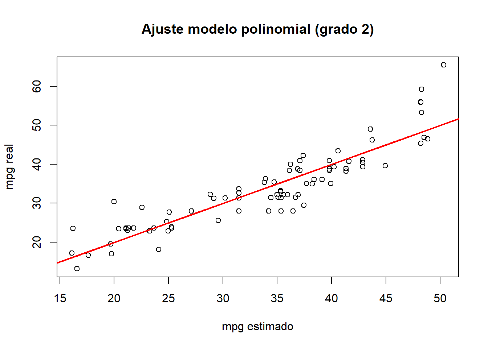
4.5 Análisis de residuos del modelo polinomial
shapiro.test(modelo_pol2$residuals)
Shapiro-Wilk normality test
data: modelo_pol2$residuals
W = 0.95926, p-value = 0.0107hist(modelo_pol2$residuals, main="Histograma residuos modelo_pol2")
plot(density(modelo_pol2$residuals),
main="Densidad residuos modelo_pol2", xlab="Residuo")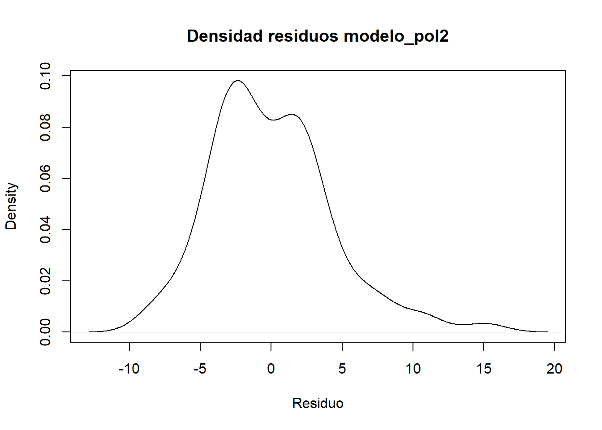
par(mfrow = c(2, 2))
plot(modelo_pol2)
par(mfrow = c(1, 1))Comparación formal entre el modelo lineal y el polinomial:
anova(modelo_lineal, modelo_pol2)Analysis of Variance Table
Model 1: mpg ~ hp + vol
Model 2: mpg ~ vol + hp + I(hp^2)
Res.Df RSS Df Sum of Sq F Pr(>F)
1 79 2274.8
2 78 1480.9 1 793.86 41.813 8.009e-09 ***
---
Signif. codes: 0 '***' 0.001 '**' 0.01 '*' 0.05 '.' 0.1 ' ' 1Si el p-valor es pequeño, el término cuadrático mejora significativamente el modelo.
4.6 Curva predicha del modelo polinomial
plot(
x = millaje$hp,
y = millaje$mpg,
main = "Consumo vs potencia motor (modelo cuadrático)",
xlab = "hp",
ylab = "mpg",
pch = 20,
col = "grey"
)
puntos_interpolados <- seq(from = min(millaje$hp), to = max(millaje$hp), by = 1)
prediccion <- predict(
object = modelo_pol2,
newdata = data.frame(hp = millaje$hp, vol = millaje$vol)
)
lines(sort(millaje$hp), prediccion[order(millaje$hp)],
col = "red", lwd = 3)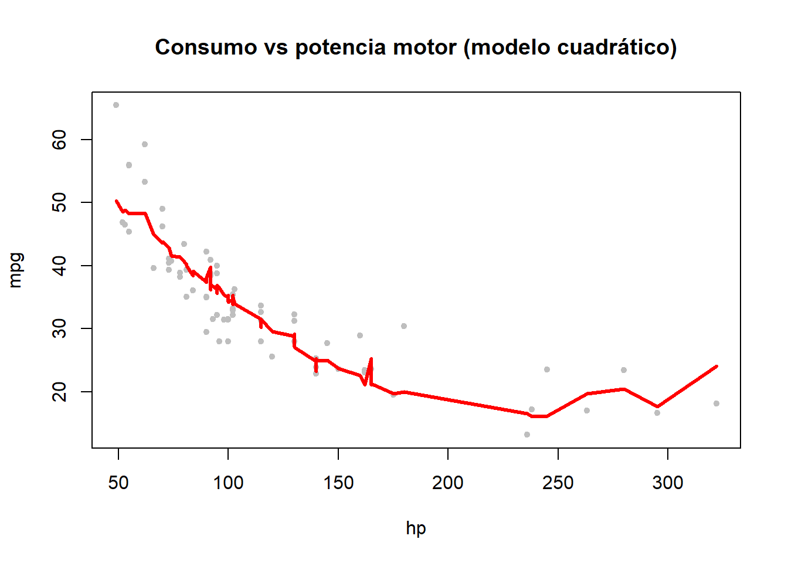
4.7 Visualización con ggplot2
ggplot(millaje, aes(x = hp, y = mpg)) +
geom_point(colour = "grey") +
stat_smooth(method = "lm", formula = y ~ hp + I(hp^2)) +
labs(title = "Consumo vs potencia motor (modelo cuadrático)") +
theme_bw()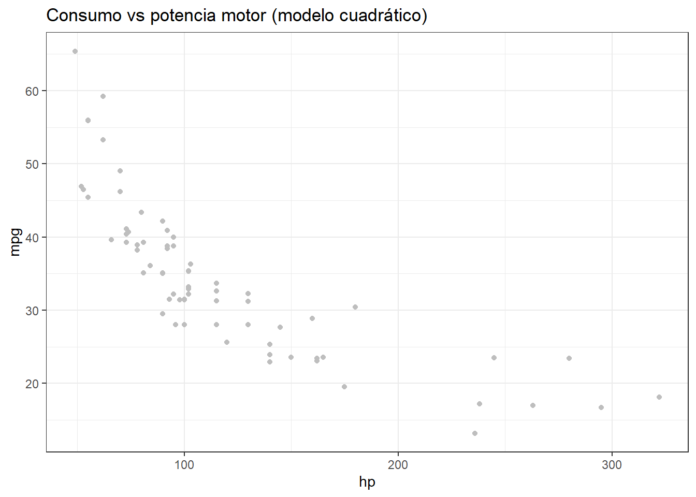
4.8 Polinomios de grados más altos
ggplot(millaje, aes(x = hp, y = mpg)) +
geom_point(colour = "grey") +
stat_smooth(method = "lm", formula = y ~ poly(x, 2), colour = "red", se = FALSE) +
stat_smooth(method = "lm", formula = y ~ poly(x, 5), colour = "blue", se = FALSE) +
stat_smooth(method = "lm", formula = y ~ poly(x, 10), colour = "green", se = FALSE) +
labs(title = "Polinomios de grados 2, 5 y 10") +
theme_bw()
Nota
Observa cómo los polinomios de grados más altos se ajustan fuertemente a los datos, pero pueden sobreajustar (overfitting) y producir curvas muy oscilantes poco realistas.
4.9 Modelos polinomiales y comparación
modelo_5 <- lm(mpg ~ poly(hp, 5), data = millaje)
summary(modelo_5)
Call:
lm(formula = mpg ~ poly(hp, 5), data = millaje)
Residuals:
Min 1Q Median 3Q Max
-7.9505 -2.5323 -0.4598 3.2027 10.9823
Coefficients:
Estimate Std. Error t value Pr(>|t|)
(Intercept) 33.7817 0.4503 75.018 < 2e-16 ***
poly(hp, 5)1 -71.1198 4.0778 -17.441 < 2e-16 ***
poly(hp, 5)2 38.4953 4.0778 9.440 1.92e-14 ***
poly(hp, 5)3 -15.3033 4.0778 -3.753 0.00034 ***
poly(hp, 5)4 7.5552 4.0778 1.853 0.06780 .
poly(hp, 5)5 -3.5388 4.0778 -0.868 0.38822
---
Signif. codes: 0 '***' 0.001 '**' 0.01 '*' 0.05 '.' 0.1 ' ' 1
Residual standard error: 4.078 on 76 degrees of freedom
Multiple R-squared: 0.8441, Adjusted R-squared: 0.8339
F-statistic: 82.31 on 5 and 76 DF, p-value: < 2.2e-16modelo_5_correjido <- lm(mpg ~ vol + hp + I(hp^2) + I(hp^3), data = millaje)
summary(modelo_5_correjido)
Call:
lm(formula = mpg ~ vol + hp + I(hp^2) + I(hp^3), data = millaje)
Residuals:
Min 1Q Median 3Q Max
-7.6503 -2.6022 -0.3181 2.6926 11.4477
Coefficients:
Estimate Std. Error t value Pr(>|t|)
(Intercept) 9.236e+01 5.361e+00 17.229 < 2e-16 ***
vol -6.226e-02 2.345e-02 -2.655 0.009634 **
hp -8.414e-01 1.135e-01 -7.410 1.38e-10 ***
I(hp^2) 3.765e-03 7.355e-04 5.119 2.20e-06 ***
I(hp^3) -5.782e-06 1.430e-06 -4.044 0.000124 ***
---
Signif. codes: 0 '***' 0.001 '**' 0.01 '*' 0.05 '.' 0.1 ' ' 1
Residual standard error: 3.983 on 77 degrees of freedom
Multiple R-squared: 0.8493, Adjusted R-squared: 0.8415
F-statistic: 108.5 on 4 and 77 DF, p-value: < 2.2e-16anova(modelo_cuadratico, modelo_5_correjido)Analysis of Variance Table
Model 1: mpg ~ poly(hp, 2)
Model 2: mpg ~ vol + hp + I(hp^2) + I(hp^3)
Res.Df RSS Df Sum of Sq F Pr(>F)
1 79 1567.5
2 77 1221.5 2 346.02 10.906 6.758e-05 ***
---
Signif. codes: 0 '***' 0.001 '**' 0.01 '*' 0.05 '.' 0.1 ' ' 1Análisis de residuos:
shapiro.test(modelo_5_correjido$residuals)
Shapiro-Wilk normality test
data: modelo_5_correjido$residuals
W = 0.98456, p-value = 0.4319hist(modelo_5_correjido$residuals, main = "Histograma residuos modelo_5_correjido")
plot(density(modelo_5_correjido$residuals),
main = "Densidad residuos modelo_5_correjido")
plot(modelo_5_correjido$fitted.values, millaje$mpg,
xlab = "mpg estimado", ylab = "mpg real",
main = "Ajuste modelo_5_correjido")
lines(c(10, 60), c(10, 60), col = "red", lwd = 2)
4.10 Transformaciones de la variable respuesta
Buscamos mejorar la normalidad de los residuos y la homocedasticidad usando transformaciones de mpg:
4.10.1 Transformación logarítmica
modelo_pol2_trans <- lm(log(1 + mpg) ~ vol + hp + I(hp^2), data = millaje)
summary(modelo_pol2_trans)
Call:
lm(formula = log(1 + mpg) ~ vol + hp + I(hp^2), data = millaje)
Residuals:
Min 1Q Median 3Q Max
-0.31049 -0.06894 -0.02497 0.07082 0.33219
Coefficients:
Estimate Std. Error t value Pr(>|t|)
(Intercept) 4.581e+00 7.376e-02 62.104 < 2e-16 ***
vol -1.846e-03 6.687e-04 -2.761 0.00718 **
hp -1.011e-02 1.141e-03 -8.858 2.03e-13 ***
I(hp^2) 1.734e-05 3.354e-06 5.171 1.75e-06 ***
---
Signif. codes: 0 '***' 0.001 '**' 0.01 '*' 0.05 '.' 0.1 ' ' 1
Residual standard error: 0.1139 on 78 degrees of freedom
Multiple R-squared: 0.8557, Adjusted R-squared: 0.8501
F-statistic: 154.1 on 3 and 78 DF, p-value: < 2.2e-16plot(modelo_pol2_trans$residuals, modelo_pol2_trans$fitted.values,
main = "Residuos vs ajustados (log(1+mpg))")
plot(log(1 + millaje$mpg), modelo_pol2_trans$fitted.values,
main = "Valores reales transformados vs ajustados")
lines(c(2, 5), c(2, 5), col = "red", lwd = 2)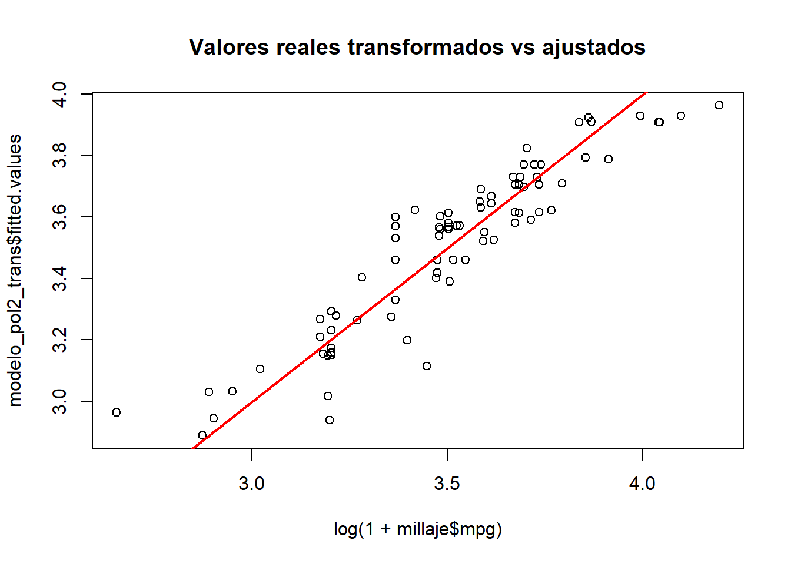
shapiro.test(modelo_pol2_trans$residuals)
Shapiro-Wilk normality test
data: modelo_pol2_trans$residuals
W = 0.98398, p-value = 0.4003hist(modelo_pol2_trans$residuals, main = "Histograma residuos modelo_pol2_trans")
plot(density(modelo_pol2_trans$residuals),
main = "Densidad residuos modelo_pol2_trans")
4.10.2 Transformación raíz cuadrada
modelo_pol3_trans <- lm(sqrt(mpg) ~ vol + hp + I(hp^2), data = millaje)
summary(modelo_pol3_trans)
Call:
lm(formula = sqrt(mpg) ~ vol + hp + I(hp^2), data = millaje)
Residuals:
Min 1Q Median 3Q Max
-0.70979 -0.22004 -0.05431 0.19640 0.95714
Coefficients:
Estimate Std. Error t value Pr(>|t|)
(Intercept) 9.031e+00 2.232e-01 40.459 < 2e-16 ***
vol -5.083e-03 2.024e-03 -2.512 0.0141 *
hp -3.256e-02 3.453e-03 -9.429 1.59e-14 ***
I(hp^2) 6.117e-05 1.015e-05 6.027 5.21e-08 ***
---
Signif. codes: 0 '***' 0.001 '**' 0.01 '*' 0.05 '.' 0.1 ' ' 1
Residual standard error: 0.3448 on 78 degrees of freedom
Multiple R-squared: 0.8442, Adjusted R-squared: 0.8383
F-statistic: 140.9 on 3 and 78 DF, p-value: < 2.2e-16shapiro.test(modelo_pol3_trans$residuals)
Shapiro-Wilk normality test
data: modelo_pol3_trans$residuals
W = 0.97571, p-value = 0.1217plot(modelo_pol3_trans$residuals, modelo_pol3_trans$fitted.values,
main = "Residuos vs ajustados (sqrt(mpg))")
plot(sqrt(millaje$mpg), modelo_pol3_trans$fitted.values,
main = "sqrt(mpg) real vs ajustado")
lines(c(4, 8), c(4, 8), col = "red", lwd = 2)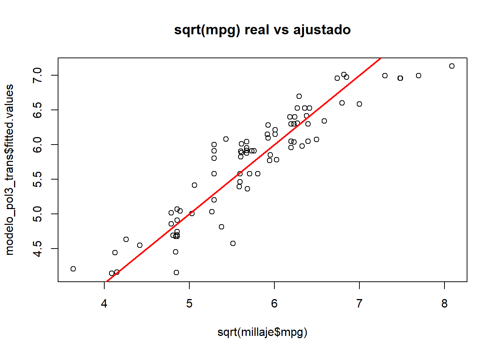
4.10.3 Transformación 1/sqrt(mpg)
modelo_pol4_trans <- lm(1/sqrt(mpg) ~ vol + hp + I(hp^2), data = millaje)
summary(modelo_pol4_trans)
Call:
lm(formula = 1/sqrt(mpg) ~ vol + hp + I(hp^2), data = millaje)
Residuals:
Min 1Q Median 3Q Max
-0.032371 -0.007178 0.001601 0.005842 0.044607
Coefficients:
Estimate Std. Error t value Pr(>|t|)
(Intercept) 8.354e-02 7.154e-03 11.677 < 2e-16 ***
vol 1.823e-04 6.486e-05 2.811 0.006249 **
hp 8.284e-04 1.107e-04 7.485 9.28e-11 ***
I(hp^2) -1.219e-06 3.253e-07 -3.747 0.000341 ***
---
Signif. codes: 0 '***' 0.001 '**' 0.01 '*' 0.05 '.' 0.1 ' ' 1
Residual standard error: 0.01105 on 78 degrees of freedom
Multiple R-squared: 0.8501, Adjusted R-squared: 0.8444
F-statistic: 147.5 on 3 and 78 DF, p-value: < 2.2e-16plot(modelo_pol4_trans$residuals, modelo_pol4_trans$fitted.values,
main = "Residuos vs ajustados (1/sqrt(mpg))")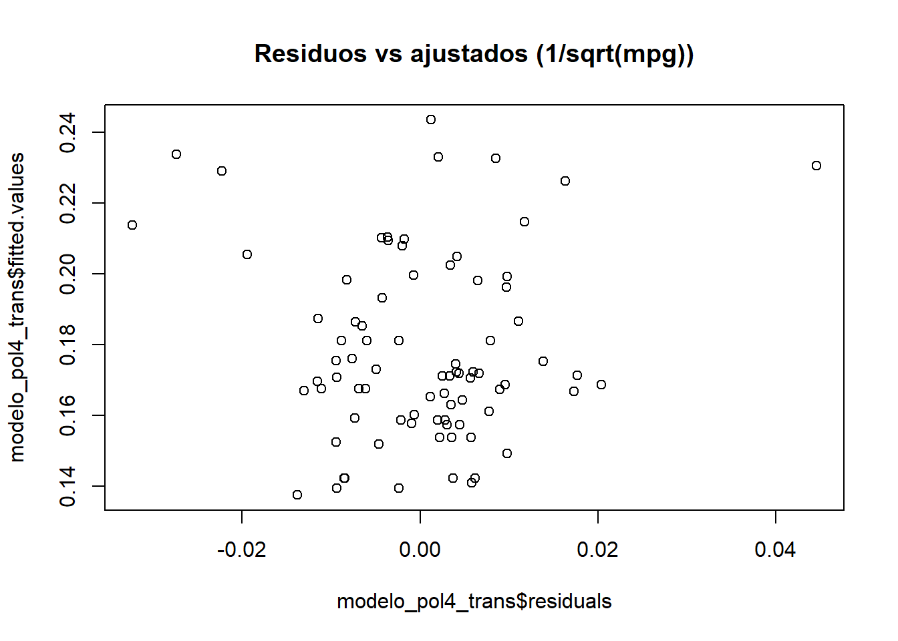
plot(1/sqrt(millaje$mpg), modelo_pol4_trans$fitted.values,
main = "1/sqrt(mpg) real vs ajustado")
shapiro.test(modelo_pol4_trans$residuals)
Shapiro-Wilk normality test
data: modelo_pol4_trans$residuals
W = 0.94789, p-value = 0.0022494.10.4 Transformaciones más complejas
modelo_pol2_tran_2 <- lm(log(1 + mpg) ~ vol + hp + log(1 + hp) + I(hp^2),
data = millaje)
summary(modelo_pol2_tran_2)
Call:
lm(formula = log(1 + mpg) ~ vol + hp + log(1 + hp) + I(hp^2),
data = millaje)
Residuals:
Min 1Q Median 3Q Max
-0.35624 -0.06687 -0.00430 0.07828 0.29355
Coefficients:
Estimate Std. Error t value Pr(>|t|)
(Intercept) 7.340e+00 1.236e+00 5.937 7.87e-08 ***
vol -2.076e-03 6.602e-04 -3.144 0.00237 **
hp 2.231e-03 5.630e-03 0.396 0.69297
log(1 + hp) -8.215e-01 3.675e-01 -2.236 0.02827 *
I(hp^2) -2.564e-06 9.486e-06 -0.270 0.78768
---
Signif. codes: 0 '***' 0.001 '**' 0.01 '*' 0.05 '.' 0.1 ' ' 1
Residual standard error: 0.1111 on 77 degrees of freedom
Multiple R-squared: 0.8645, Adjusted R-squared: 0.8574
F-statistic: 122.8 on 4 and 77 DF, p-value: < 2.2e-16plot(log(1 + millaje$mpg), modelo_pol2_tran_2$fitted.values,
main = "log(1+mpg) real vs ajustado (modelo_tran_2)")
shapiro.test(modelo_pol2_tran_2$residuals)
Shapiro-Wilk normality test
data: modelo_pol2_tran_2$residuals
W = 0.98972, p-value = 0.7645hist(modelo_pol2_tran_2$residuals, main = "Histograma residuos modelo_tran_2")
plot(density(modelo_pol2_tran_2$residuals),
main = "Densidad residuos modelo_tran_2")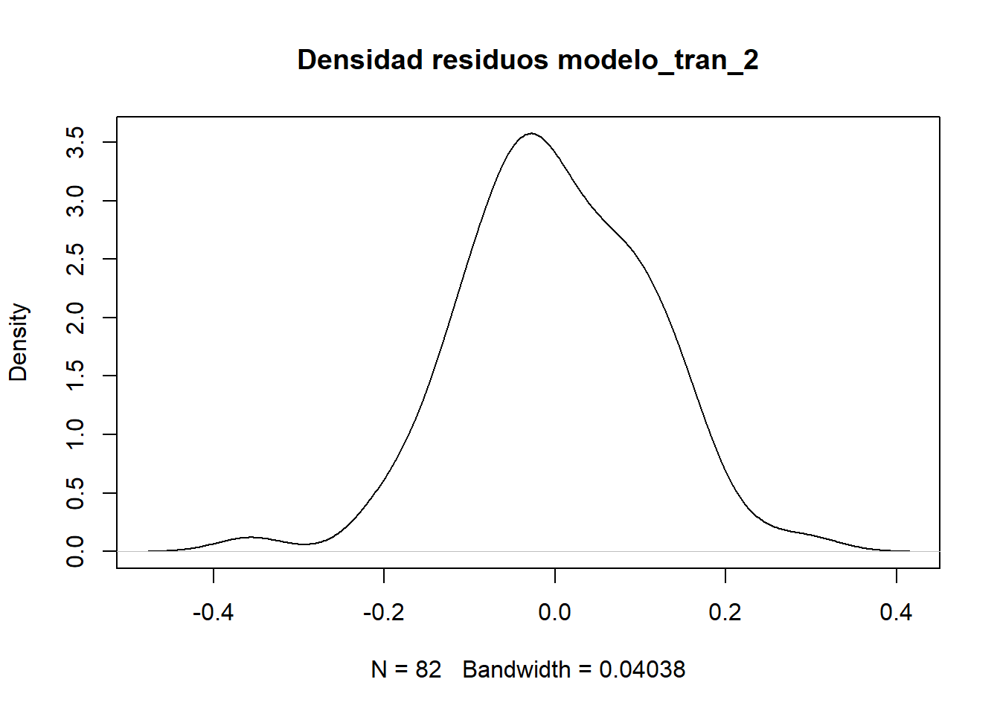
plot(modelo_pol2_tran_2)


Otro modelo más flexible:
modelo_pol2_tran_3 <- lm(log(1 + mpg) ~ hp + I(1/hp) + I(1/(hp^2)) +
log(1 + hp) + I(hp^2),
data = millaje)
summary(modelo_pol2_tran_3)
Call:
lm(formula = log(1 + mpg) ~ hp + I(1/hp) + I(1/(hp^2)) + log(1 +
hp) + I(hp^2), data = millaje)
Residuals:
Min 1Q Median 3Q Max
-0.33860 -0.07127 -0.01969 0.07723 0.30307
Coefficients:
Estimate Std. Error t value Pr(>|t|)
(Intercept) -2.034e+01 7.517e+01 -0.271 0.787
hp -3.355e-02 8.029e-02 -0.418 0.677
I(1/hp) 4.093e+02 1.224e+03 0.334 0.739
I(1/(hp^2)) -5.165e+03 1.705e+04 -0.303 0.763
log(1 + hp) 5.049e+00 1.558e+01 0.324 0.747
I(hp^2) 3.600e-05 7.142e-05 0.504 0.616
Residual standard error: 0.1187 on 76 degrees of freedom
Multiple R-squared: 0.8475, Adjusted R-squared: 0.8374
F-statistic: 84.45 on 5 and 76 DF, p-value: < 2.2e-16shapiro.test(modelo_pol2_tran_3$residuals)
Shapiro-Wilk normality test
data: modelo_pol2_tran_3$residuals
W = 0.98744, p-value = 0.6104plot(modelo_pol2_tran_3)
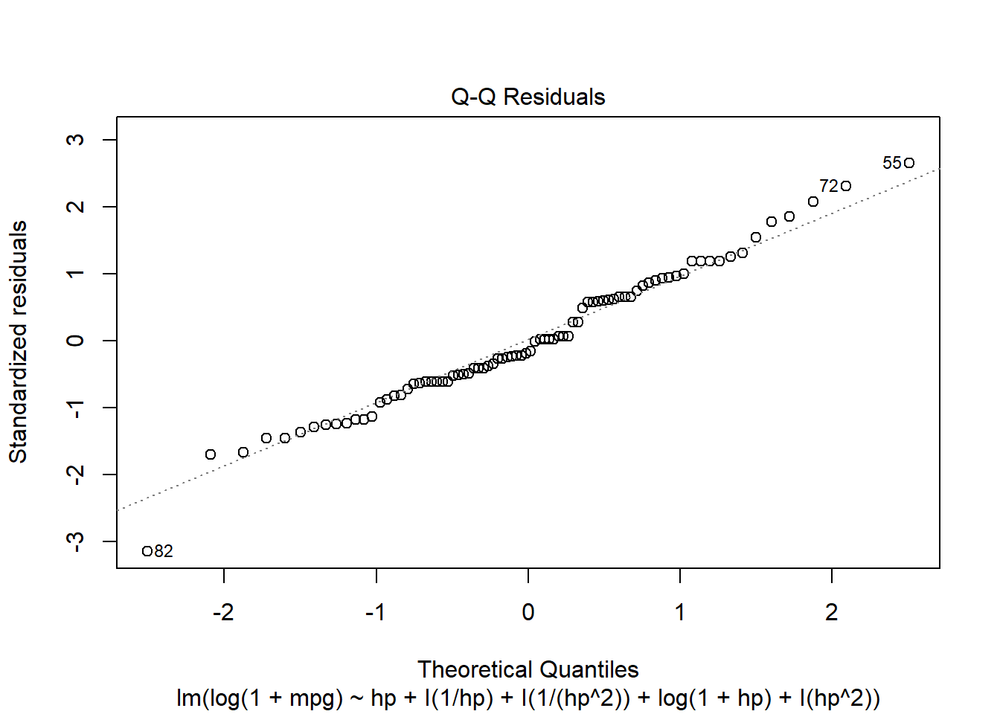


plot(log(1 + millaje$mpg), modelo_pol2_tran_3$fitted.values,
main = "log(1+mpg) real vs ajustado (modelo_tran_3)")
lines(c(3, 4.5), c(3, 4.5), col = "red", lwd = 2)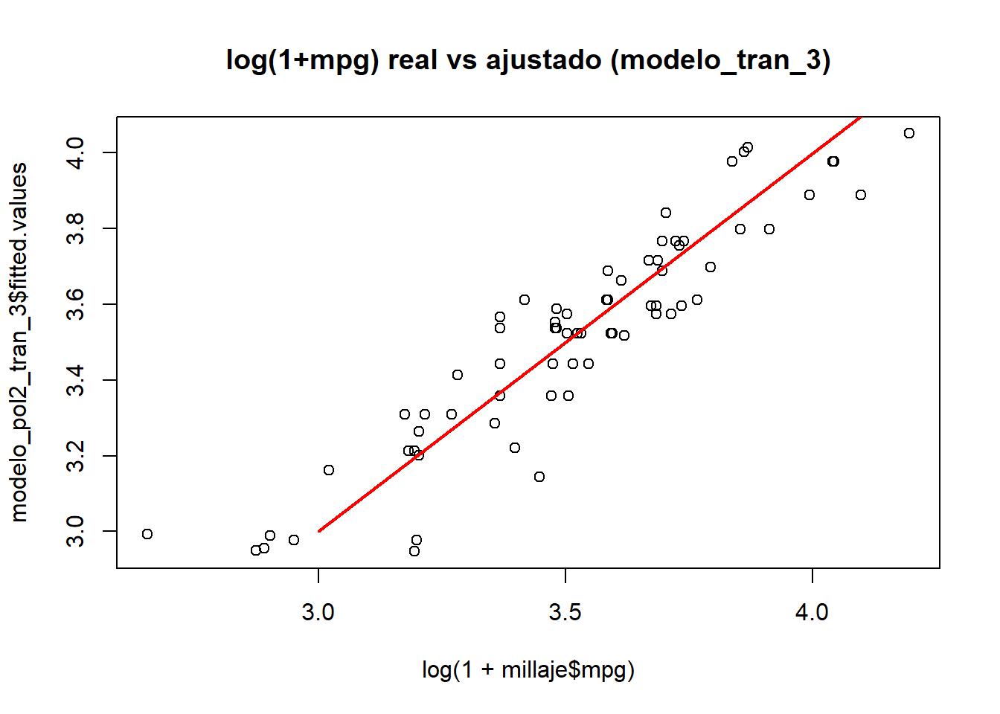
4.10.5 Modelos sin constante y selección
modelo_pol2_tran_4 <- lm(log(1 + mpg) ~ hp + I(1/hp) + I(1/(hp^2)) +
log(1 + hp) + I(hp^2) - 1,
data = millaje)
summary(modelo_pol2_tran_4)
Call:
lm(formula = log(1 + mpg) ~ hp + I(1/hp) + I(1/(hp^2)) + log(1 +
hp) + I(hp^2) - 1, data = millaje)
Residuals:
Min 1Q Median 3Q Max
-0.34452 -0.07355 -0.01464 0.07509 0.30562
Coefficients:
Estimate Std. Error t value Pr(>|t|)
hp -1.202e-02 1.098e-02 -1.094 0.2772
I(1/hp) 7.934e+01 1.074e+02 0.738 0.4625
I(1/(hp^2)) -6.299e+02 3.147e+03 -0.200 0.8419
log(1 + hp) 8.319e-01 3.658e-01 2.274 0.0258 *
I(hp^2) 1.725e-05 1.732e-05 0.996 0.3223
---
Signif. codes: 0 '***' 0.001 '**' 0.01 '*' 0.05 '.' 0.1 ' ' 1
Residual standard error: 0.1179 on 77 degrees of freedom
Multiple R-squared: 0.9989, Adjusted R-squared: 0.9989
F-statistic: 1.459e+04 on 5 and 77 DF, p-value: < 2.2e-16plot(log(1 + millaje$mpg), modelo_pol2_tran_4$fitted.values,
main = "Modelo_tran_4 (sin constante)")
lines(c(3, 4.5), c(3, 4.5), col = "red", lwd = 2)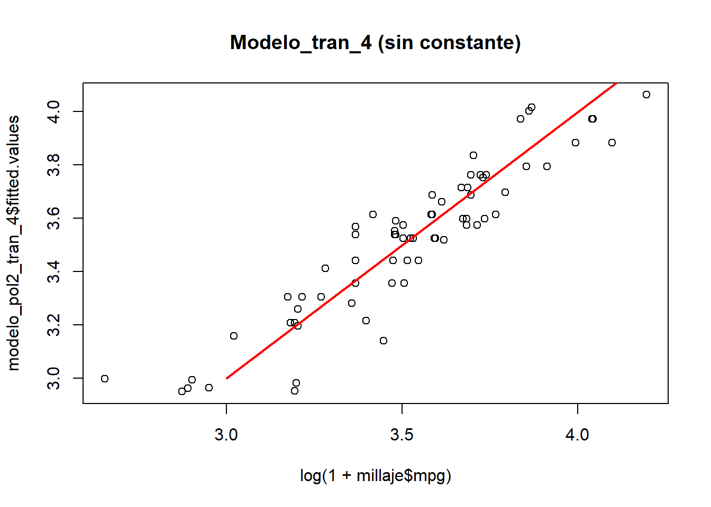
modelo_pol2_tran_5 <- lm(log(1 + mpg) ~ hp + I(1/hp) + log(1 + hp) + I(hp^2) - 1,
data = millaje)
summary(modelo_pol2_tran_5)
Call:
lm(formula = log(1 + mpg) ~ hp + I(1/hp) + log(1 + hp) + I(hp^2) -
1, data = millaje)
Residuals:
Min 1Q Median 3Q Max
-0.33926 -0.07379 -0.01700 0.07535 0.30724
Coefficients:
Estimate Std. Error t value Pr(>|t|)
hp -1.410e-02 3.554e-03 -3.967 0.000161 ***
I(1/hp) 5.795e+01 1.116e+01 5.194 1.6e-06 ***
log(1 + hp) 9.030e-01 8.687e-02 10.394 < 2e-16 ***
I(hp^2) 2.041e-05 7.119e-06 2.867 0.005328 **
---
Signif. codes: 0 '***' 0.001 '**' 0.01 '*' 0.05 '.' 0.1 ' ' 1
Residual standard error: 0.1172 on 78 degrees of freedom
Multiple R-squared: 0.9989, Adjusted R-squared: 0.9989
F-statistic: 1.846e+04 on 4 and 78 DF, p-value: < 2.2e-16shapiro.test(modelo_pol2_tran_5$residuals)
Shapiro-Wilk normality test
data: modelo_pol2_tran_5$residuals
W = 0.98884, p-value = 0.7058plot(log(1 + millaje$mpg), modelo_pol2_tran_5$fitted.values,
main = "Modelo_tran_5 (sin constante)")
lines(c(3, 4.5), c(3, 4.5), col = "red", lwd = 2)
plot(modelo_pol2_tran_5)
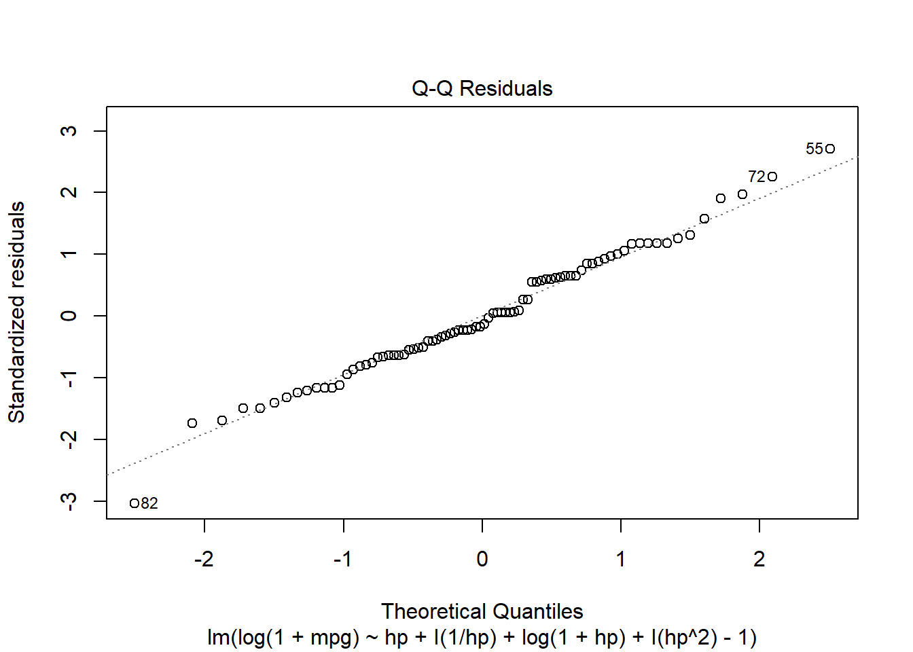
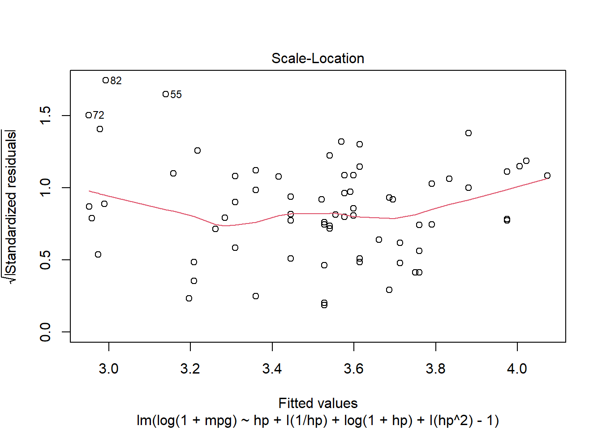

4.10.6 Un modelo candidato “bueno”
El script sugiere como uno de los mejores:
modelo_pol2_tran_6 <- lm(log(1 + mpg) ~ log(1 + hp) - 1, data = millaje)
summary(modelo_pol2_tran_6)
Call:
lm(formula = log(1 + mpg) ~ log(1 + hp) - 1, data = millaje)
Residuals:
Min 1Q Median 3Q Max
-1.3860 -0.3480 0.1168 0.3870 1.3059
Coefficients:
Estimate Std. Error t value Pr(>|t|)
log(1 + hp) 0.73870 0.01383 53.42 <2e-16 ***
---
Signif. codes: 0 '***' 0.001 '**' 0.01 '*' 0.05 '.' 0.1 ' ' 1
Residual standard error: 0.5883 on 81 degrees of freedom
Multiple R-squared: 0.9724, Adjusted R-squared: 0.9721
F-statistic: 2854 on 1 and 81 DF, p-value: < 2.2e-16shapiro.test(modelo_pol2_tran_6$residuals)
Shapiro-Wilk normality test
data: modelo_pol2_tran_6$residuals
W = 0.97148, p-value = 0.06443hist(modelo_pol2_tran_6$residuals,
main = "Histograma residuos modelo_tran_6")
plot(density(modelo_pol2_tran_6$residuals),
main = "Densidad residuos modelo_tran_6")
plot(modelo_pol2_tran_6)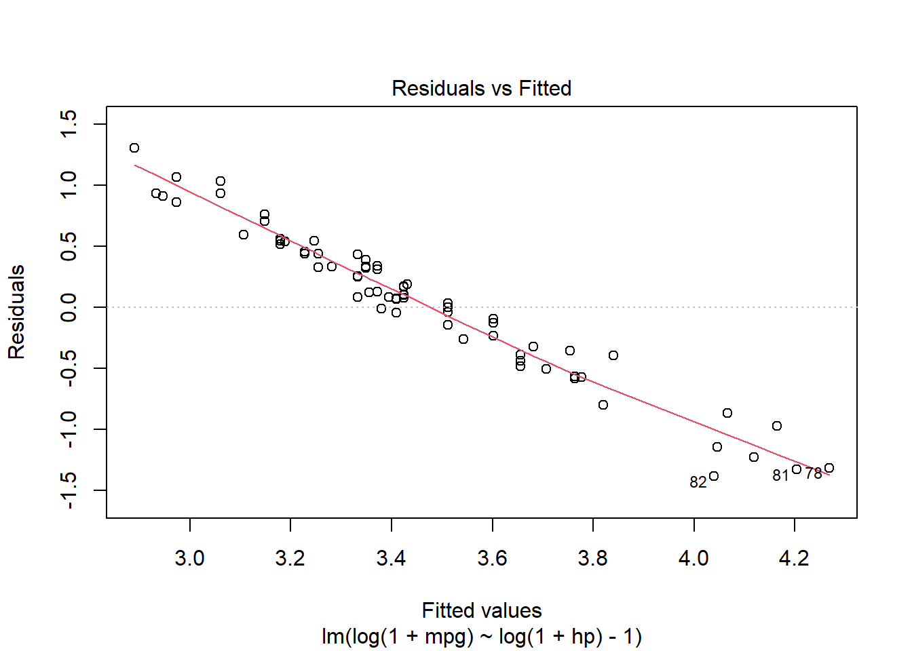


modelo_pol2_tran_7 <- lm(log(1 + mpg) ~ vol + log(1 + hp) - 1, data = millaje)
summary(modelo_pol2_tran_7)
Call:
lm(formula = log(1 + mpg) ~ vol + log(1 + hp) - 1, data = millaje)
Residuals:
Min 1Q Median 3Q Max
-1.3617 -0.3668 0.1028 0.4405 1.2853
Coefficients:
Estimate Std. Error t value Pr(>|t|)
vol 0.003047 0.002943 1.035 0.304
log(1 + hp) 0.674633 0.063404 10.640 <2e-16 ***
---
Signif. codes: 0 '***' 0.001 '**' 0.01 '*' 0.05 '.' 0.1 ' ' 1
Residual standard error: 0.588 on 80 degrees of freedom
Multiple R-squared: 0.9728, Adjusted R-squared: 0.9721
F-statistic: 1429 on 2 and 80 DF, p-value: < 2.2e-16
Nota
En la práctica, al elegir entre varios modelos transformados, debes considerar:
- Supuestos sobre los residuos (normalidad, homocedasticidad).
- Interpretabilidad económica de los coeficientes.
- Capacidad predictiva (idealmente evaluada fuera de muestra).
- Parsimonia: preferir el modelo más simple que explique bien los datos.
5 Cierre del laboratorio
En este laboratorio trabajaste con:
- Regresión múltiple con eliminación de variables irrelevantes.
- Inclusión de interacciones y términos cuadráticos.
- Visualizaciones 3D de superficies de regresión.
- Modelos polinomiales de distintos grados.
- Comparación de modelos vía ANOVA.
- Uso de transformaciones (log, raíz, recíprocos) para mejorar los supuestos.
Todo esto forma parte del “arsenal” que usarás en cursos posteriores de econometría y en aplicaciones reales para ajustar modelos más realistas y robustos